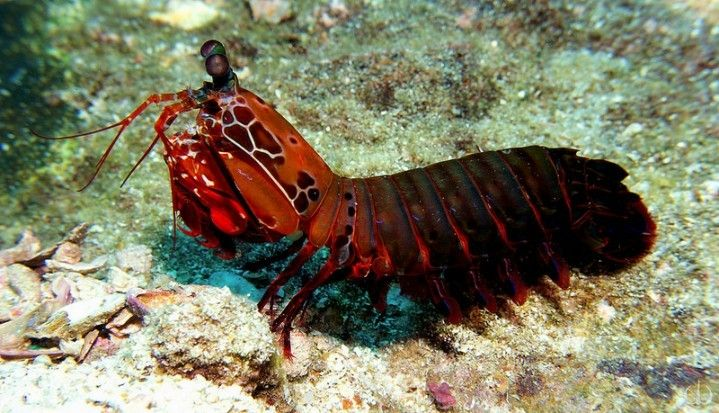

Stomatopoda (ou estomatópode), chamados popularmente de tamarutacas ou de lacraias-do-mar no Brasil, é uma ordem de crustáceos marinhos da subclasse Hoplocarida, que agrupa cerca de 400 espécies, caracterizadas principalmente pela morfologia da segunda pata torácica, que é modificada em apêndice subquelado, lembrando uma pata de louva-a-deus.
Fatos sobre o Stomatopoda
Habitat:
O camarão mantis vive em águas mornas e rasas, e normalmente cresce entre 6-12 polegadas(15-30) de comprimento.
Visão:
Esta criatura possiu dezesseis cones recepitivos á cor.

Ataque:
possuim dois apêndices raptoriais na frente de seu corpo.
estes aceleram com a mesma velocidade de um tiro de um rifle de calibre .22 (equivalente a 80km/h)
Para saber mais
assista ao video abaixo